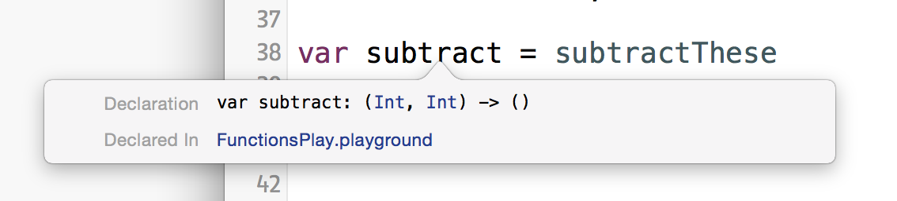

The type of subtractThese():
subtractThese()

It's the same type! Interesting. Can you think of some implications of this?
How about this:
1 2 3
var arrayOfFuncs: [(Int, Int) -> ()] arrayOfFuncs = [addThese, subtractThese]